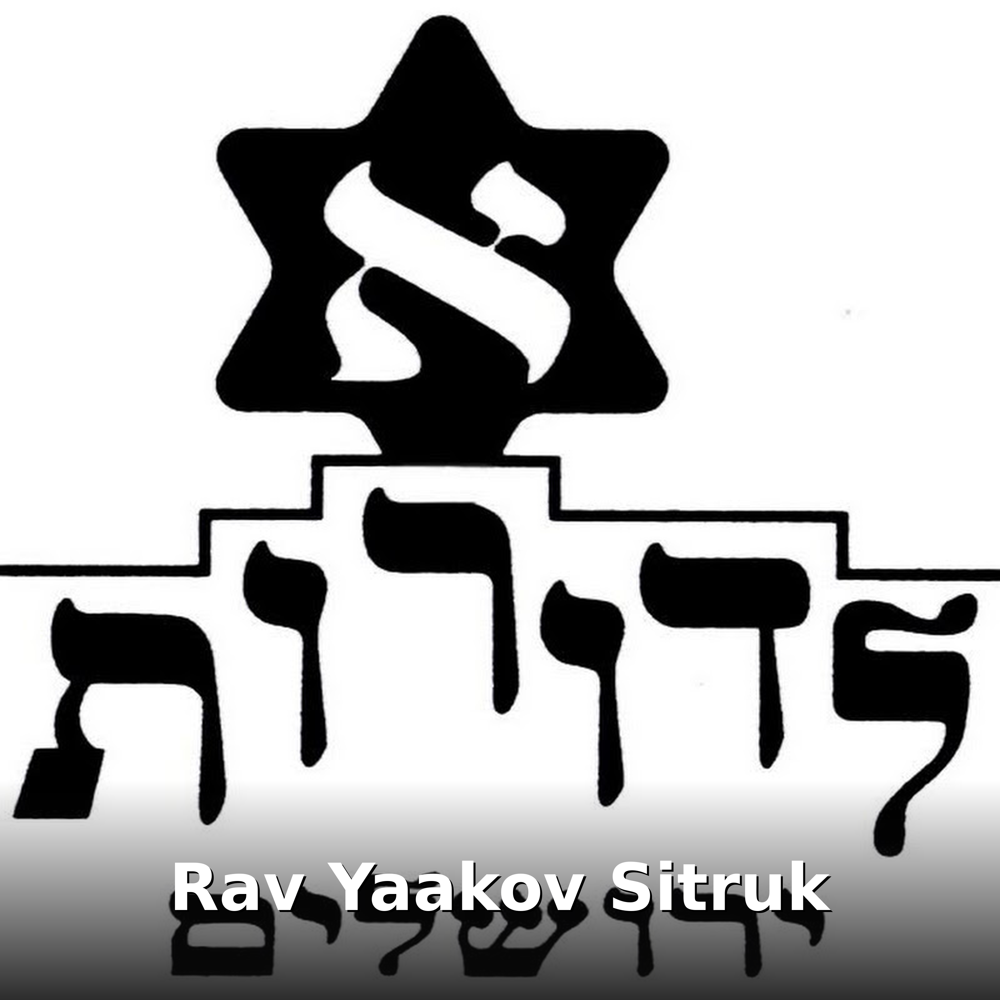

Rav Yaakov Sitruk
Bienvenue sur le podcast dédié à Rav Yaakov Sitruk, une voix de sagesse et de guidance spirituelle pour notre communauté juive francophone. Rav Yaakov Sitruk, figure estimée de l'enseignement talmudique et de la transmission des valeurs juives, partage à travers ce podcast un enseignement profond et accessible, enraciné dans la Torah et la tradition. Son approche bienveillante et éclairée accompagne chaque auditeur dans son cheminement personnel d'étude et de croissance spirituelle. Ce podcast est le fruit de l'engagement d'ALEF LEDOROTH, l'association fondée à l'initiative du Grand Rabbin Rav Yossef Haim Sitruk, pour mettre l'enseignement à la portée de tous ceux qui cherchent à approfondir leur savoir juif.
Avec ce podcast, la Torah devient votre compagne dans chaque moment de la journée. Écoutez pendant vos trajets en voiture, vos courses, une promenade tranquille — continuez à enrichir votre savoir sans interruption, à votre rythme. Suivez vos épisodes écoutés et ressentez cette belle fierté de progresser semaine après semaine dans votre étude, d'accumuler les connaissances qui nourrissent l'âme et illuminent le cœur. Cette progression constante devient source de satisfaction profonde et de rapprochement avec les valeurs éternelles.
Le podcast vous offre également une protection précieuse : contrairement aux vidéos partagées sur les réseaux numériques où des contenus indésirables peuvent surgir à côté de votre écran, ce podcast préserve la pureté de vos yeux, de vos oreilles et de votre cœur. Aucune publicité perturbatrice, aucune exposition à la pritsout, une expérience spirituelle saine et protégée pour vous et vos enfants. Un espace sacré d'apprentissage, exclusivement dédié à la transmission de la sagesse.
Tous les épisodes


La confiance d’Hashem en l’homme (Béréshith 5786)
22 octobre 2025.


ANTISEMITISME
25 juillet 2025.


L’importance de la communication
Bô 5785.


Le DIN : Fondement de l’existence
Veille de Rosh Hashana 5785.


1.
2 Elloul 5784.

Le monde appartient à Hashem
Pirké Avoth (6-10)

Avoir un rav
Pirké Avoth (6-9)

Thora et argent
Pirké Avoth (6-9)

Don de la Thora : IMPOSSIBLE à oublier 2/2
Shavouoth 5784.

Thora et beauté
Pirké Avoth (6-8)

Le magnifique statut du juif
Pirké Avoth (6-2)

Faire plaisir à Hashem
Pirké Avoth (6-1)

Qui est intelligent… et qui ne l’est PAS
Pirké Avoth (5-7)

ON A PLEURÉ AVEC NOS BLESSÉS, LES FAMILLES DES OTAGES ET NOS SOLDATS
23/10/2023. Je tenais absolument à partager avec vous cet après-midi midi incroyable passé avec nos héros. Attention, beaucoup d’émotion 🥺

COMME UN H’AYAL
11 ieme jour… 17/16/2023

VOS DÉSIRS SONT DES ORDRES
08/01/23


Droit au but !!! (Mishpatim 5782)
Désolé, il manque la dernière minute de conclusion


Rav Yakov Sitruk - Soyons positifs donc respectueux
Abonnez-vous sur notre chaîne YouTube pour une nouvelle vidéo tous les jeudis (quand il y a cours) : https://www.youtube.com/c/alefledoroth Sans oublier notre groupe Facebook, pour suivre nos événemen

Rav Yakov Sitruk - Etre Adam dans l'harmonie
Abonnez-vous sur notre chaîne YouTube pour une nouvelle vidéo tous les jeudis (quand il y a cours) : https://www.youtube.com/c/alefledoroth Sans oublier notre groupe Facebook, pour suivre nos événemen


Yakov Sitruk - Thora et savoir vivre (Nasso 5779)
Abonnez-vous sur notre chaîne YouTube pour une nouvelle vidéo tous les jeudis (quand il y a cours) : https://www.youtube.com/c/alefledoroth Sans oublier notre groupe Facebook, pour suivre nos événemen


Yakov Sitruk - Comment être propriétaire de ce qui m'appartient ? (Behar 5779)
Abonnez-vous sur notre chaîne YouTube pour une nouvelle vidéo tous les jeudis (quand il y a cours) : https://www.youtube.com/c/alefledoroth Sans oublier notre groupe Facebook, pour suivre nos événemen


Yakov Sitruk - Action, Réaction ! (Emor 5779)
Abonnez-vous sur notre chaîne YouTube pour une nouvelle vidéo tous les jeudis (quand il y a cours) : https://www.youtube.com/c/alefledoroth Sans oublier notre groupe Facebook, pour suivre nos événemen


Yakov Sitruk - Le pouvoir des miracles (Metsora 5779)
Abonnez-vous sur notre chaîne YouTube pour une nouvelle vidéo tous les jeudis (quand il y a cours) : https://www.youtube.com/c/alefledoroth Sans oublier notre groupe Facebook, pour suivre nos événemen


Yakov Sitruk - Souvenirs souvenirs !!! (Tsav 5779)
Abonnez-vous sur notre chaîne YouTube pour une nouvelle vidéo tous les jeudis (quand il y a cours) : https://www.youtube.com/c/alefledoroth Sans oublier notre groupe Facebook, pour suivre nos événemen


Yakov Sitruk - Parnassa pas cacher, Parnassa sans Hashem (Vayiqra 5779)
Abonnez-vous sur notre chaîne YouTube pour une nouvelle vidéo tous les jeudis (quand il y a cours) : https://www.youtube.com/c/alefledoroth Sans oublier notre groupe Facebook, pour suivre nos événemen


Yakov SItruk - Alors ! Ça vaut le coup ou pas ? (Peqoudei 5779)
Abonnez-vous sur notre chaîne YouTube pour une nouvelle vidéo tous les jeudis (quand il y a cours) : https://www.youtube.com/c/alefledoroth Sans oublier notre groupe Facebook, pour suivre nos événemen


Yakov Sitruk - Le dépassement de soi (Vayakhel 5779)
Abonnez-vous sur notre chaîne YouTube pour une nouvelle vidéo tous les jeudis (quand il y a cours) : https://www.youtube.com/c/alefledoroth Sans oublier notre groupe Facebook, pour suivre nos événemen


Rav Sitruk, Rav Gobert - Et si on se mariait ? (Mélavé Malka 02/02/2019 + after)
Abonnez-vous sur notre chaîne YouTube pour une nouvelle vidéo tous les jeudis (quand il y a cours) : https://www.youtube.com/c/alefledoroth Sans oublier notre groupe Facebook, pour suivre nos événemen


Yakov Sitruk - Obligé d'être joyeux !!! (Terouma 5779)
Abonnez-vous sur notre chaîne YouTube pour une nouvelle vidéo tous les jeudis (quand il y a cours) : https://www.youtube.com/c/alefledoroth Sans oublier notre groupe Facebook, pour suivre nos événemen


Yakov Sitruk - La valeur de la vie dans l'adversité et le dénouement (Mishpatim 5779)
Abonnez-vous sur notre chaîne YouTube pour une nouvelle vidéo tous les jeudis (quand il y a cours) : https://www.youtube.com/c/alefledoroth Sans oublier notre groupe Facebook, pour suivre nos événemen


Yakov Sitruk - Le renouveau : mouvement perpétuel (Beshalaḥ 5779)
Abonnez-vous sur notre chaîne YouTube pour une nouvelle vidéo tous les jeudis (quand il y a cours) : https://www.youtube.com/c/alefledoroth Sans oublier notre groupe Facebook, pour suivre nos événemen


Yakov Sitruk - Égypte : le rationnel en exil (Va'era 5779)
Abonnez-vous sur notre chaîne YouTube pour une nouvelle vidéo tous les jeudis (quand il y a cours) : https://www.youtube.com/c/alefledoroth Sans oublier notre groupe Facebook, pour suivre nos événemen


Yakov Sitruk - Valeur et importance du secret (Shemot 5779)
Abonnez-vous sur notre chaîne YouTube pour une nouvelle vidéo tous les jeudis (quand il y a cours) : https://www.youtube.com/c/alefledoroth Sans oublier notre groupe Facebook, pour suivre nos événemen


Rav Yakov Sitruk présente Alef Ledoroth chez Qualita
« On peut être juif de différentes manières et je me bats contre les étiquettes ». Le #Rav_Yaakov_Sitruk, fondateur de l’association Alef Ledoroth, est l’invité de Cathy Bensoussan. Le fils du grand r


Yakov Sitruk - L'art de dévoiler Hashem (Vayeshev 5779)
Abonnez-vous sur notre chaîne YouTube pour une nouvelle vidéo tous les jeudis (quand il y a cours) : https://www.youtube.com/c/alefledoroth Sans oublier notre groupe Facebook, pour suivre nos événemen


Yakov Sitruk - L'effort plus fort que la réussite (Vayishlaḥ 5779)
Abonnez-vous sur notre chaîne YouTube pour une nouvelle vidéo tous les jeudis (quand il y a cours) : https://www.youtube.com/c/alefledoroth Sans oublier notre groupe Facebook, pour suivre nos événemen


Yakov Sitruk - La dérision : une fuite toujours possible (Vayetse 5779)
Abonnez-vous sur notre chaîne YouTube pour une nouvelle vidéo tous les jeudis (quand il y a cours) : https://www.youtube.com/c/alefledoroth Sans oublier notre groupe Facebook, pour suivre nos événemen


Yakov Sitruk - Plaisirs et saveurs de la vie selon la Thora (Toldot 5779)
Abonnez-vous sur notre chaîne YouTube pour une nouvelle vidéo tous les jeudis (quand il y a cours) : https://www.youtube.com/c/alefledoroth Sans oublier notre groupe Facebook, pour suivre nos événemen


Yakov Sitruk - Positif / Négatif : chacun son rôle (Ḥayei Sarah 5779)
Abonnez-vous sur notre chaîne YouTube pour une nouvelle vidéo tous les jeudis (quand il y a cours) : https://www.youtube.com/c/alefledoroth Sans oublier notre groupe Facebook, pour suivre nos événemen


Rav Yakov Sitruk - Hilkhot tefila (11/07/2018)
Vidéo de יעקב בניסטי

Yakov Sitruk - "Écoute Israël" mission à accomplir (Matot - Mass'ei 5778)
Abonnez-vous sur notre chaîne YouTube pour une nouvelle vidéo tous les jeudis (quand il y a cours) : https://www.youtube.com/c/alefledoroth Sans oublier notre groupe Facebook, pour suivre nos événemen


Yakov Sitruk - Espoir et perspective (Pinḥas 5778)
Abonnez-vous sur notre chaîne YouTube pour une nouvelle vidéo tous les jeudis (quand il y a cours) : https://www.youtube.com/c/alefledoroth Sans oublier notre groupe Facebook, pour suivre nos événemen


Yakov Sitruk - Du début jusqu'à la fin (Ḥouqat 5778)
Abonnez-vous sur notre chaîne YouTube pour une nouvelle vidéo tous les jeudis (quand il y a cours) : https://www.youtube.com/c/alefledoroth Sans oublier notre groupe Facebook, pour suivre nos événemen


Yakov Sitruk - Regards vers l'infini... (Koraḥ 5778)
Abonnez-vous sur notre chaîne YouTube pour une nouvelle vidéo tous les jeudis (quand il y a cours) : https://www.youtube.com/c/alefledoroth Sans oublier notre groupe Facebook, pour suivre nos événemen


Yakov Sitruk - Lachone ara : création du mal (Beha'alotekha 5778)
Abonnez-vous sur notre chaîne YouTube pour une nouvelle vidéo tous les jeudis (quand il y a cours) : https://www.youtube.com/c/alefledoroth Sans oublier notre groupe Facebook, pour suivre nos événemen

Yakov Sitruk - Immoralité, confiance et Messie (Nasso 5778)
Abonnez-vous sur notre chaîne YouTube pour une nouvelle vidéo tous les jeudis (quand il y a cours) : https://www.youtube.com/c/alefledoroth Sans oublier notre groupe Facebook, pour suivre nos événemen


Yakov Sitruk - La Thora graine de braha (Bamidbar 5778)
Abonnez-vous sur notre chaîne YouTube pour une nouvelle vidéo tous les jeudis (quand il y a cours) : https://www.youtube.com/c/alefledoroth Sans oublier notre groupe Facebook, pour suivre nos événemen


Yakov Sitruk - Moi Je ... (Beḥouqotaï 5778)
Abonnez-vous sur notre chaîne YouTube pour une nouvelle vidéo tous les jeudis (quand il y a cours) : https://www.youtube.com/c/alefledoroth Sans oublier notre groupe Facebook, pour suivre nos événemen


Yakov Sitruk - Savons nous accepter les cadeaux d'Hachem ? (Behar 5778)
Abonnez-vous sur notre chaîne YouTube pour une nouvelle vidéo tous les jeudis (quand il y a cours) : https://www.youtube.com/c/alefledoroth Sans oublier notre groupe Facebook, pour suivre nos événemen


Yakov Sitruk - Aimer pour combler (un vide ?) (Emor 5778)
Abonnez-vous sur notre chaîne YouTube pour une nouvelle vidéo tous les jeudis (quand il y a cours) : https://www.youtube.com/c/alefledoroth Sans oublier notre groupe Facebook, pour suivre nos événemen


Yakov Sitruk - Libre d'être soit même (Tsav 5778)
Abonnez-vous sur notre chaîne YouTube pour une nouvelle vidéo tous les jeudis (quand il y a cours) : https://www.youtube.com/c/alefledoroth Sans oublier notre groupe Facebook, pour suivre nos événemen


Rav Michaël Cohen-Scalli - Hilkhot tefila (13/03/2018)
Vidéo de יעקב בניסטי


Yakov Sitruk - Tsniout...la relation cachée avec Hachem (Ki Tissa 5778)
Abonnez-vous sur notre chaîne YouTube pour une nouvelle vidéo tous les jeudis (quand il y a cours) : https://www.youtube.com/c/alefledoroth Sans oublier notre groupe Facebook, pour suivre nos événemen


Yakov Sitruk - Tout droit vers la joie (Tetsaveh 5778)
Abonnez-vous sur notre chaîne YouTube pour une nouvelle vidéo tous les jeudis (quand il y a cours) : https://www.youtube.com/c/alefledoroth Sans oublier notre groupe Facebook, pour suivre nos événemen


Yakov Sitruk - Le rire est-il forcément synonyme de joie ? (Terouma 5778)
Abonnez-vous sur notre chaîne YouTube pour une nouvelle vidéo tous les jeudis (quand il y a cours) : https://www.youtube.com/c/alefledoroth Sans oublier notre groupe Facebook, pour suivre nos événemen


Yakov Sitruk - Petites lois, grand engagement (Mishpatim 5778)
Abonnez-vous sur notre chaîne YouTube pour une nouvelle vidéo tous les jeudis (quand il y a cours) : https://www.youtube.com/c/alefledoroth Sans oublier notre groupe Facebook, pour suivre nos événemen


Soirée hommage au Grand Rabbin Yossef HaÏm SITRUK zatsal à Marseille
Dimanche 10 septembre 2017 Grande Synagogue Breteuil à Marseille Soirée hommage au Grand Rabbin Sitruk zatsal (12 mois) et aux endeuillés de la communauté qui nous ont quitté cette année.


Yakov Sitruk - Ne fais pas aux autres... et reçois la thora ! (Yitro 5778)
Abonnez-vous sur notre chaîne YouTube pour une nouvelle vidéo tous les jeudis (quand il y a cours) : https://www.youtube.com/c/alefledoroth Sans oublier notre groupe Facebook, pour suivre nos événemen


Yakov Sitruk - La mer rouge : miracle du quotidien (Beshalaḥ 5778)
Abonnez-vous sur notre chaîne YouTube pour une nouvelle vidéo tous les jeudis (quand il y a cours) : https://www.youtube.com/c/alefledoroth Sans oublier notre groupe Facebook, pour suivre nos événemen


Cours du Rav Yakov Sitruk Ecole Yavne Marseille
Janvier 2018

Rav Michaël Cohen-Scalli - Hilkhot tefila (14/01/2018)
Vidéo de יעקב בניסטי


Rav Michael Cohen-Scalli - Hilkhot tefila (09/01/2018)
Vidéo de יעקב בניסטי

Yakov Sitruk - L'homme et la passion du rapprochement (Va'era 5778)
Abonnez-vous sur notre chaîne YouTube pour une nouvelle vidéo tous les jeudis (quand il y a cours) : https://www.youtube.com/c/alefledoroth Sans oublier notre groupe Facebook, pour suivre nos événemen


Yakov Sitruk - Il faut s'interdire d'oublier (Shemot 5778)
Abonnez-vous sur notre chaîne YouTube pour une nouvelle vidéo tous les jeudis (quand il y a cours) : https://www.youtube.com/c/alefledoroth Sans oublier notre groupe Facebook, pour suivre nos événemen

Rabanite Danielle Sitruk - Alef Ledoroth
lundi 1er janvier 2018, Jerusalem


Rav Yakov Sitruk - Hilkhot tefila (01/01/2018)
Vidéo de יעקב בניסטי


Yakov Sitruk - Libre d'avoir envie (Vayeshev 5778)
Abonnez-vous sur notre chaîne YouTube pour une nouvelle vidéo tous les jeudis (quand il y a cours) : https://www.youtube.com/c/alefledoroth Sans oublier notre groupe Facebook, pour suivre nos événemen


Yakov Sitruk - Le bien, le mal et le goy (Vayichlah 5778)
Abonnez-vous sur notre chaîne YouTube pour une nouvelle vidéo tous les jeudis (quand il y a cours) : https://www.youtube.com/c/alefledoroth Sans oublier notre groupe Facebook, pour suivre nos événemen


Yakov Sitruk - Envisager l'impossible (Vayetsé 5778)
Abonnez-vous sur notre chaîne YouTube pour une nouvelle vidéo tous les jeudis (quand il y a cours) : https://www.youtube.com/c/alefledoroth Sans oublier notre groupe Facebook, pour suivre nos événemen


Yakov Sitruk - Mais pourquoi tant d'amour pour Essav (Toldot 5778)
Abonnez-vous sur notre chaîne YouTube pour une nouvelle vidéo tous les jeudis (quand il y a cours) : https://www.youtube.com/c/alefledoroth Sans oublier notre groupe Facebook, pour suivre nos événemen


Yakov Sitruk - Mais pourquoi tout le monde réclame le tombeau des patriarches ? (Ḥayei Sarah 5778)
Abonnez-vous sur notre chaîne YouTube pour une nouvelle vidéo tous les jeudis (quand il y a cours) : https://www.youtube.com/c/alefledoroth Sans oublier notre groupe Facebook, pour suivre nos événemen


Yakov Sitruk - La prière et l'épreuve (Lekh lekha 5778)
Abonnez-vous sur notre chaîne YouTube pour une nouvelle vidéo tous les jeudis (quand il y a cours) : https://www.youtube.com/c/alefledoroth Sans oublier notre groupe Facebook, pour suivre nos événemen


Yakov Sitruk - Kippour : un voyage à l'intérieur de soi (Aharei Mot 5778)
Abonnez-vous sur notre chaîne YouTube pour une nouvelle vidéo tous les jeudis (quand il y a cours) : https://www.youtube.com/c/alefledoroth Sans oublier notre groupe Facebook, pour suivre nos événemen


Yakov Sitruk - Le Shofar : au delà des paroles et des larmes (Ha'azinou 5777)
Abonnez-vous sur notre chaîne YouTube pour une nouvelle vidéo tous les jeudis (quand il y a cours) : https://www.youtube.com/c/alefledoroth Sans oublier notre groupe Facebook, pour suivre nos événemen


Yakov Sitruk - Roch hachana : la chance d'être soit même (Ki tavo 5777)
Abonnez-vous sur notre chaîne YouTube pour une nouvelle vidéo tous les jeudis (quand il y a cours) : https://www.youtube.com/c/alefledoroth Sans oublier notre groupe Facebook, pour suivre nos événemen


Yakov Sitruk - Mazal et commencement (Ki tétsé 5777)
Abonnez-vous sur notre chaîne YouTube pour une nouvelle vidéo tous les jeudis (quand il y a cours) : https://www.youtube.com/c/alefledoroth Sans oublier notre groupe Facebook, pour suivre nos événemen


Rav Yakov Sitruk - Hilkhot tefilines (28/08/2017)
Retrouvez les Halakhots sur les téfilines étudiées à Alef Ledoroth

Yakov Sitruk - Tisha Beav (9 Av 5777)
Abonnez-vous sur notre chaîne YouTube pour une nouvelle vidéo tous les jeudis (quand il y a cours) : https://www.youtube.com/c/alefledoroth Sans oublier notre groupe Facebook, pour suivre nos événemen

Yakov Sitruk - Sous l'influence du temps (Matot - Mass'ei 5777)
Abonnez-vous sur notre chaîne YouTube pour une nouvelle vidéo tous les jeudis (quand il y a cours) : https://www.youtube.com/c/alefledoroth Sans oublier notre groupe Facebook, pour suivre nos événemen

Yakov Sitruk - L'attente (Pinḥas 5777)
Abonnez-vous sur notre chaîne YouTube pour une nouvelle vidéo tous les jeudis (quand il y a cours) : https://www.youtube.com/c/alefledoroth Sans oublier notre groupe Facebook, pour suivre nos événemen

Yakov Sitruk - L'eau est elle source de conflit ? (Ḥoukat 5777)
Abonnez-vous sur notre chaîne YouTube pour une nouvelle vidéo tous les jeudis (quand il y a cours) : https://www.youtube.com/c/alefledoroth Sans oublier notre groupe Facebook, pour suivre nos événemen

Yakov Sitruk - La vérité : une valeur absolument relative (Koraḥ 5777)
Abonnez-vous sur notre chaîne YouTube pour une nouvelle vidéo tous les jeudis (quand il y a cours) : https://www.youtube.com/c/alefledoroth Sans oublier notre groupe Facebook, pour suivre nos événemen

Yakov Sitruk - Bleu et blanc : la définition des mitsvots (Shelaḥ Lekha 5777)
Abonnez-vous sur notre chaîne YouTube pour une nouvelle vidéo tous les jeudis (quand il y a cours) : https://www.youtube.com/c/alefledoroth Sans oublier notre groupe Facebook, pour suivre nos événemen

Yakov Sitruk - Définition en deux mots (Beha'alotekha 5777)
Abonnez-vous sur notre chaîne YouTube pour une nouvelle vidéo tous les jeudis (quand il y a cours) : https://www.youtube.com/c/alefledoroth Sans oublier notre groupe Facebook, pour suivre nos événemen

Yakov Sitruk - L'enthousiasme de la nouveauté (Nasso 5777)
Abonnez-vous sur notre chaîne YouTube pour une nouvelle vidéo tous les jeudis (quand il y a cours) : https://www.youtube.com/c/alefledoroth Sans oublier notre groupe Facebook, pour suivre nos événemen

Yakov Sitruk - Thora-Ani : ma Thora me rend unique (Bamidbar 5777)
Abonnez-vous sur notre chaîne YouTube pour une nouvelle vidéo tous les jeudis (quand il y a cours) : https://www.youtube.com/c/alefledoroth Sans oublier notre groupe Facebook, pour suivre nos événemen

Yakov Sitruk - Que la force soit avec vous (Tsav 5777)
Abonnez-vous sur notre chaîne YouTube pour une nouvelle vidéo tous les jeudis (quand il y a cours) : https://www.youtube.com/c/alefledoroth Sans oublier notre groupe Facebook, pour suivre nos événemen

Yakov Sitruk - L'intelligence : don ou devoir ? (Vayaq'hel - Peqoudei 5777)
Abonnez-vous sur notre chaîne YouTube pour une nouvelle vidéo tous les jeudis (quand il y a cours) : https://www.youtube.com/c/alefledoroth Sans oublier notre groupe Facebook, pour suivre nos événemen

Yakov Sitruk - Torate Moshé : pour/par l'homme (Tetsavé 5777)
Abonnez-vous sur notre chaîne YouTube pour une nouvelle vidéo tous les jeudis (quand il y a cours) : https://www.youtube.com/c/alefledoroth Sans oublier notre groupe Facebook, pour suivre nos événemen

Yakov Sitruk - La joie : le sens de l'événement au futur (Terouma 5777)
Abonnez-vous sur notre chaîne YouTube pour une nouvelle vidéo tous les jeudis (quand il y a cours) : https://www.youtube.com/c/alefledoroth Sans oublier notre groupe Facebook, pour suivre nos événemen

Yakov Sitruk - L'expérience de la compréhension (Ytro 5777)
Abonnez-vous sur notre chaîne YouTube pour une nouvelle vidéo tous les jeudis (quand il y a cours) : https://www.youtube.com/c/alefledoroth Sans oublier notre groupe Facebook, pour suivre nos événemen

Yakov Sitruk - La traversée de la mer Rouge : le miracle ordinaire (Beshalah' 5777)
Abonnez-vous sur notre chaîne YouTube pour une nouvelle vidéo tous les jeudis (quand il y a cours) : https://www.youtube.com/c/alefledoroth Sans oublier notre groupe Facebook, pour suivre nos événemen

Yakov Sitruk - Du droit à la parole à la valeur de la parole (Va'era 5777)
Abonnez-vous sur notre chaîne YouTube pour une nouvelle vidéo tous les jeudis (quand il y a cours) : https://www.youtube.com/c/alefledoroth Sans oublier notre groupe Facebook, pour suivre nos événemen

Yakov Sitruk - La matière : potentiel, effort et dynamique (Shemot 5777)
Abonnez-vous sur notre chaîne YouTube pour une nouvelle vidéo tous les jeudis (quand il y a cours) : https://www.youtube.com/c/alefledoroth Sans oublier notre groupe Facebook, pour suivre nos événemen

Yakov Sitruk - Je veux donc je suis (Vayeh'i 5777)
Abonnez-vous sur notre chaîne YouTube pour une nouvelle vidéo tous les jeudis (quand il y a cours) : https://www.youtube.com/c/alefledoroth Sans oublier notre groupe Facebook, pour suivre nos événemen

Yakov Sitruk - La place d'Hachem (Vayigash 5777)
Abonnez-vous sur notre chaîne YouTube pour une nouvelle vidéo tous les jeudis (quand il y a cours) : https://www.youtube.com/c/alefledoroth Sans oublier notre groupe Facebook, pour suivre nos événemen

Yakov Sitruk - Juif d'abord ou juif tout court (Vayeshev 5777)
Abonnez-vous sur notre chaîne YouTube pour une nouvelle vidéo tous les jeudis (quand il y a cours) : https://www.youtube.com/c/alefledoroth Sans oublier notre groupe Facebook, pour suivre nos événemen

Yakov Sitruk - La valeur du présent (Vayetse 5777)
Abonnez-vous sur notre chaîne YouTube pour une nouvelle vidéo tous les jeudis (quand il y a cours) : https://www.youtube.com/c/alefledoroth Sans oublier notre groupe Facebook, pour suivre nos événemen

Yakov Sitruk - Rencontre avec la prière (Toldot 5777)
Abonnez-vous sur notre chaîne YouTube pour une nouvelle vidéo tous les jeudis (quand il y a cours) : https://www.youtube.com/c/alefledoroth Sans oublier notre groupe Facebook, pour suivre nos événemen

Yakov Sitruk - Transformation sous influence (Vayera 5777)
Abonnez-vous sur notre chaîne YouTube pour une nouvelle vidéo tous les jeudis (quand il y a cours) : https://www.youtube.com/c/alefledoroth Sans oublier notre groupe Facebook, pour suivre nos événemen

Yakov Sitruk - Vers l'inconnue et au delà (Lekh lekha 5777)
Abonnez-vous sur notre chaîne YouTube pour une nouvelle vidéo tous les jeudis (quand il y a cours) : https://www.youtube.com/c/alefledoroth Sans oublier notre groupe Facebook, pour suivre nos événemen

Yakov Sitruk - Le moi intérieur et le moi extérieur (Ha'azinou 5777)
Abonnez-vous sur notre chaîne YouTube pour une nouvelle vidéo tous les jeudis (quand il y a cours) : https://www.youtube.com/c/alefledoroth Sans oublier notre groupe Facebook, pour suivre nos événemen

Yakov Sitruk - L'homme : le doute insoluble (Ki tetsé 5776)
Abonnez-vous sur notre chaîne YouTube pour une nouvelle vidéo tous les jeudis (quand il y a cours) : https://www.youtube.com/c/alefledoroth Sans oublier notre groupe Facebook, pour suivre nos événemen

Yakov Sitruk - Eloul ce qui reste de l'année (Shoftim 5776)
Abonnez-vous sur notre chaîne YouTube pour une nouvelle vidéo tous les jeudis (quand il y a cours) : https://www.youtube.com/c/alefledoroth Sans oublier notre groupe Facebook, pour suivre nos événemen

Yakov Sitruk - La cours des miracles : bon et moins bon (Mass'ei 5776)
Abonnez-vous sur notre chaîne YouTube pour une nouvelle vidéo tous les jeudis (quand il y a cours) : https://www.youtube.com/c/alefledoroth Sans oublier notre groupe Facebook, pour suivre nos événemen

Yakov Sitruk - Détruire et construire (Matot 5776)
Abonnez-vous sur notre chaîne YouTube pour une nouvelle vidéo tous les jeudis (quand il y a cours) : https://www.youtube.com/c/alefledoroth Sans oublier notre groupe Facebook, pour suivre nos événemen

Yakov Sitruk - Et si le monde n'était qu'un projet (Pinh'as 5776)
Abonnez-vous sur notre chaîne YouTube pour une nouvelle vidéo tous les jeudis (quand il y a cours) : https://www.youtube.com/c/alefledoroth Sans oublier notre groupe Facebook, pour suivre nos événemen

Yakov Sitruk - Le judaïsme : l'équilibre du monde (H'ouqat 5776)
Abonnez-vous sur notre chaîne YouTube pour une nouvelle vidéo tous les jeudis (quand il y a cours) : https://www.youtube.com/c/alefledoroth Sans oublier notre groupe Facebook, pour suivre nos événemen

Yakov Sitruk - La vérité si j'mens 2 (Shelahh Lekha 5776)
Abonnez-vous sur notre chaîne YouTube pour une nouvelle vidéo tous les jeudis (quand il y a cours) : https://www.youtube.com/c/alefledoroth Sans oublier notre groupe Facebook, pour suivre nos événemen

Yakov Sitruk - Thora et désert : parole et anti-parole (Beha'alotekha 5776)
Abonnez-vous sur notre chaîne YouTube pour une nouvelle vidéo tous les jeudis (quand il y a cours) : https://www.youtube.com/c/alefledoroth Sans oublier notre groupe Facebook, pour suivre nos événemen

Yakov Sitruk - Notre thora à un nom et c'est : ... (Nasso 5776)
Abonnez-vous sur notre chaîne YouTube pour une nouvelle vidéo tous les jeudis (quand il y a cours) : https://www.youtube.com/c/alefledoroth Sans oublier notre groupe Facebook, pour suivre nos événemen

Yakov Sitruk - Midotes : l'équilibre et l'harmonie (Bamidbar 5776)
Abonnez-vous sur notre chaîne YouTube pour une nouvelle vidéo tous les jeudis (quand il y a cours) : https://www.youtube.com/c/alefledoroth Sans oublier notre groupe Facebook, pour suivre nos événemen

Yakov Sitruk - Midotes : les qualités à la portée de tous (Behar 5776)
Abonnez-vous sur notre chaîne YouTube pour une nouvelle vidéo tous les jeudis (quand il y a cours) : https://www.youtube.com/c/alefledoroth Sans oublier notre groupe Facebook, pour suivre nos événemen

Yakov Sitruk - Astrologie et interconnexions kabbalistiques (Qedoshim 5776)
Abonnez-vous sur notre chaîne YouTube pour une nouvelle vidéo tous les jeudis (quand il y a cours) : https://www.youtube.com/c/alefledoroth Sans oublier notre groupe Facebook, pour suivre nos événemen

Yakov Sitruk - Choix ou décision ? (Metsora 5776)
Abonnez-vous sur notre chaîne YouTube pour une nouvelle vidéo tous les jeudis (quand il y a cours) : https://www.youtube.com/c/alefledoroth Sans oublier notre groupe Facebook, pour suivre nos événemen

Yakov Sitruk - Alors on sort ? (Tazria 5776)
Abonnez-vous sur notre chaîne YouTube pour une nouvelle vidéo tous les jeudis (quand il y a cours) : https://www.youtube.com/c/alefledoroth Sans oublier notre groupe Facebook, pour suivre nos événemen

Yakov Sitruk - Le secret de la réussite : c'est "Grâce" à ... (Tsav 5776)
Abonnez-vous sur notre chaîne YouTube pour une nouvelle vidéo tous les jeudis (quand il y a cours) : https://www.youtube.com/c/alefledoroth Sans oublier notre groupe Facebook, pour suivre nos événemen

Yakov Sitruk - Un an vaut 12 mois ? Vous en êtes sûr ? (Vayiqra 5776)
Abonnez-vous sur notre chaîne YouTube pour une nouvelle vidéo tous les jeudis (quand il y a cours) : https://www.youtube.com/c/alefledoroth Sans oublier notre groupe Facebook, pour suivre nos événemen

Yakov Sitruk - Plutôt collectif ou individuel ? (Peqoudei 5776)
Abonnez-vous sur notre chaîne YouTube pour une nouvelle vidéo tous les jeudis (quand il y a cours) : https://www.youtube.com/c/alefledoroth Sans oublier notre groupe Facebook, pour suivre nos événemen

Yakov Sitruk - Une deuxième chance ? (Vayaq'hel 5776)
Abonnez-vous sur notre chaîne YouTube pour une nouvelle vidéo tous les jeudis (quand il y a cours) : https://www.youtube.com/c/alefledoroth Sans oublier notre groupe Facebook, pour suivre nos événemen

Yakov Sitruk - Vaincre la mort et son mauvais penchant (Ki tissa 5776)
Abonnez-vous sur notre chaîne YouTube pour une nouvelle vidéo tous les jeudis (quand il y a cours) : https://www.youtube.com/c/alefledoroth Sans oublier notre groupe Facebook, pour suivre nos événemen

Yakov Sitruk - La joie : un but facile à atteindre (Michpatim 5776) (audio)
Abonnez-vous sur notre chaîne YouTube pour une nouvelle vidéo tous les jeudis (quand il y a cours) : https://www.youtube.com/c/alefledoroth Sans oublier notre groupe Facebook, pour suivre nos événemen

Yakov Sitruk - La vérité si j'mens (Yitro 5776)
Abonnez-vous sur notre chaîne YouTube pour une nouvelle vidéo tous les jeudis (quand il y a cours) : https://www.youtube.com/c/alefledoroth Sans oublier notre groupe Facebook, pour suivre nos événemen

Yakov Sitruk - Renaissance : maîtrisez votre vie (Bo 5776)
Abonnez-vous sur notre chaîne YouTube pour une nouvelle vidéo tous les jeudis (quand il y a cours) : https://www.youtube.com/c/alefledoroth Sans oublier notre groupe Facebook, pour suivre nos événemen

Yakov Sitruk - Votre nouvelle arme : votre image (Chémot 5776)
Abonnez-vous sur notre chaîne YouTube pour une nouvelle vidéo tous les jeudis (quand il y a cours) : https://www.youtube.com/c/alefledoroth Sans oublier notre groupe Facebook, pour suivre nos événemen

Yakov Sitruk - Faites entrer l'accusé (Vayéh'i 5776)
Abonnez-vous sur notre chaîne YouTube pour une nouvelle vidéo tous les jeudis (quand il y a cours) : https://www.youtube.com/c/alefledoroth Sans oublier notre groupe Facebook, pour suivre nos événemen

Yakov Sitruk - L'amour éternel (Vayigach 5776)
Abonnez-vous sur notre chaîne YouTube pour une nouvelle vidéo tous les jeudis (quand il y a cours) : https://www.youtube.com/c/alefledoroth Sans oublier notre groupe Facebook, pour suivre nos événemen

Yakov Sitruk - Naassé Vénichma (Vayéshév 5776)
Abonnez-vous sur notre chaîne YouTube pour une nouvelle vidéo tous les jeudis (quand il y a cours) : https://www.youtube.com/c/alefledoroth Sans oublier notre groupe Facebook, pour suivre nos événemen

Yakov Sitruk - La vie en blanc (Vayishlah' 5776)
Abonnez-vous sur notre chaîne YouTube pour une nouvelle vidéo tous les jeudis (quand il y a cours) : https://www.youtube.com/c/alefledoroth Sans oublier notre groupe Facebook, pour suivre nos événemen

Yakov Sitruk - Esav et Ishmaël : Rire et dérision (Vayétsé 5776)
Abonnez-vous sur notre chaîne YouTube pour une nouvelle vidéo tous les jeudis (quand il y a cours) : https://www.youtube.com/c/alefledoroth Sans oublier notre groupe Facebook, pour suivre nos événemen